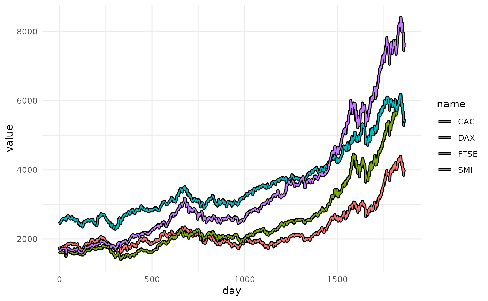
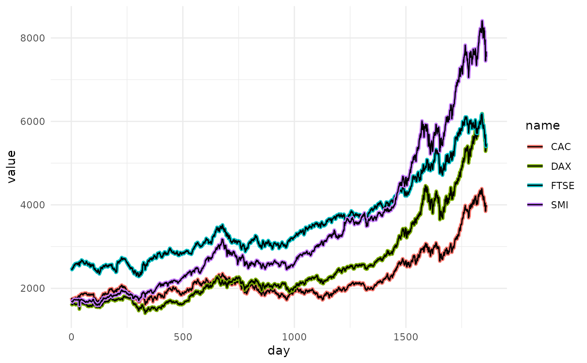
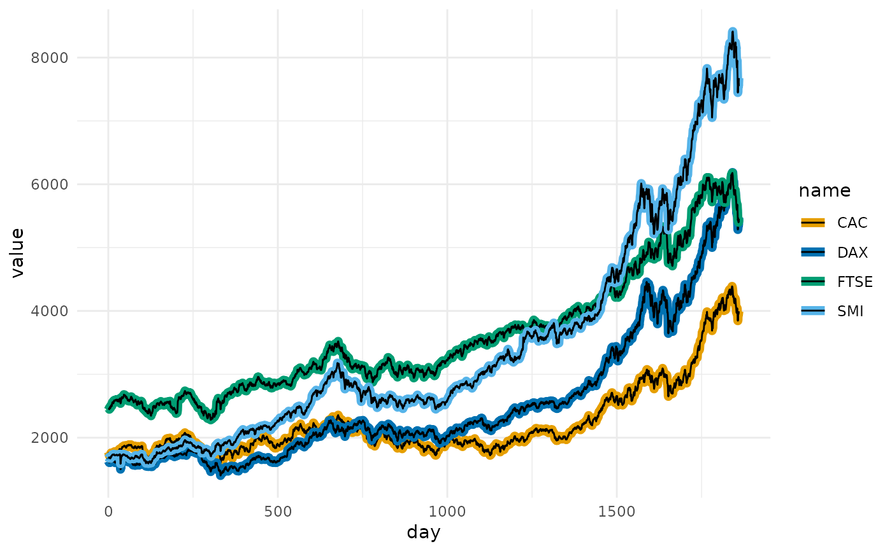
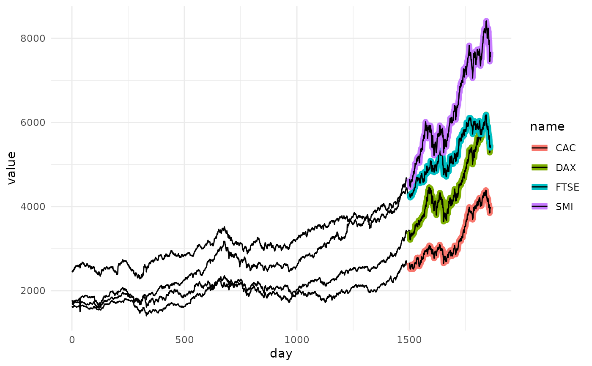
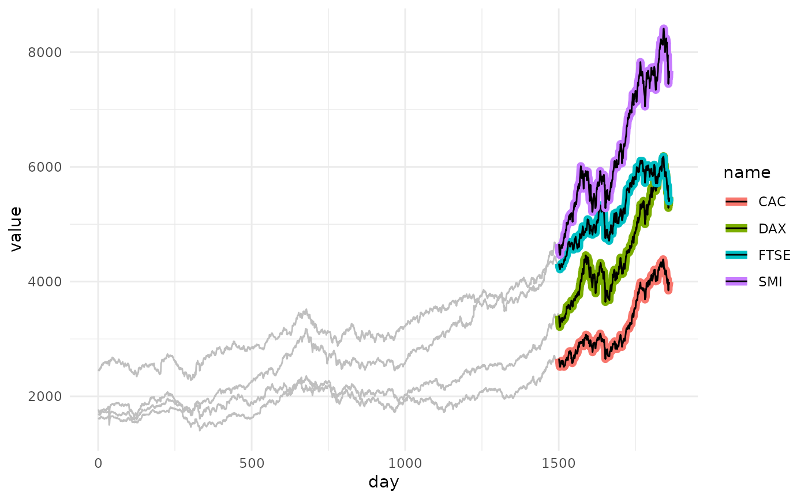
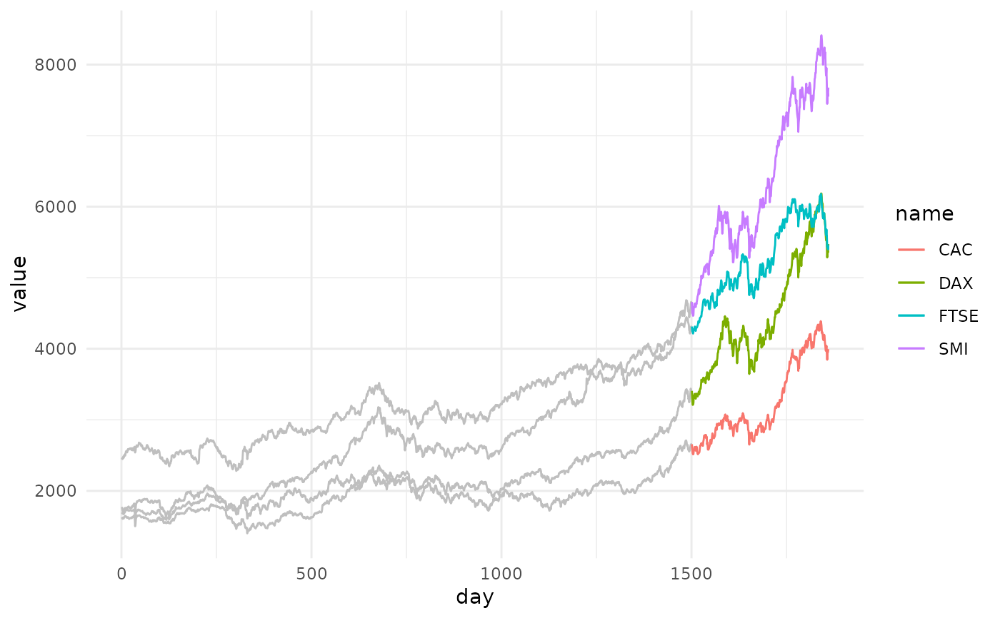

These geoms are similar to ggplot2::geom_path(),
ggplot2::geom_line(), and ggplot2::geom_step(), but also
include the ability to highlight line segments of interest.
These geoms accept normal ggplot2 graphical parameters with
some modifications. fill controls the color of the center line,
color controls the outline color, and stroke controls
outline width, similar to how filled shapes are modified for other ggplot2
geoms. Additional parameters including size, alpha,
linetype, linejoin, lineend, and linemitre are
also accepted.
Usage
geom_path_trace(
mapping = NULL,
data = NULL,
stat = "identity",
position = "identity",
...,
trace_position = "all",
background_params = list(color = NA),
lineend = "butt",
linejoin = "round",
linemitre = 10,
arrow = NULL,
na.rm = FALSE,
show.legend = NA,
inherit.aes = TRUE
)
geom_line_trace(
mapping = NULL,
data = NULL,
stat = "identity",
position = "identity",
na.rm = FALSE,
orientation = NA,
show.legend = NA,
inherit.aes = TRUE,
trace_position = "all",
background_params = list(color = NA),
...
)
geom_step_trace(
mapping = NULL,
data = NULL,
stat = "identity",
position = "identity",
direction = "hv",
na.rm = FALSE,
show.legend = NA,
inherit.aes = TRUE,
trace_position = "all",
background_params = list(color = NA),
...
)Arguments
- mapping
Set of aesthetic mappings created by
aes(). If specified andinherit.aes = TRUE(the default), it is combined with the default mapping at the top level of the plot. You must supplymappingif there is no plot mapping.- data
The data to be displayed in this layer. There are three options:
If
NULL, the default, the data is inherited from the plot data as specified in the call toggplot().A
data.frame, or other object, will override the plot data. All objects will be fortified to produce a data frame. Seefortify()for which variables will be created.A
functionwill be called with a single argument, the plot data. The return value must be adata.frame, and will be used as the layer data. Afunctioncan be created from aformula(e.g.~ head(.x, 10)).- stat
The statistical transformation to use on the data for this layer, either as a
ggprotoGeomsubclass or as a string naming the stat stripped of thestat_prefix (e.g."count"rather than"stat_count")- position
Position adjustment, either as a string naming the adjustment (e.g.
"jitter"to useposition_jitter), or the result of a call to a position adjustment function. Use the latter if you need to change the settings of the adjustment.- ...
Other arguments passed on to
layer(). These are often aesthetics, used to set an aesthetic to a fixed value, likecolour = "red"orsize = 3. They may also be parameters to the paired geom/stat.- trace_position
Specifies which data points to outline, can be one of:
"all" to outline every group plotted
A predicate specifying which data points to outline. This must evaluate to
TRUEorFALSEwithin the context of the input data. e.g.value > 100
- background_params
Named list specifying aesthetic parameters to use for background data points when a predicate is passed to
trace_position, e.g.list(color = "red")- lineend
Line end style (round, butt, square).
- linejoin
Line join style (round, mitre, bevel).
- linemitre
Line mitre limit (number greater than 1).
- arrow
Arrow specification, as created by
grid::arrow().- na.rm
If
FALSE, the default, missing values are removed with a warning. IfTRUE, missing values are silently removed.- show.legend
logical. Should this layer be included in the legends?
NA, the default, includes if any aesthetics are mapped.FALSEnever includes, andTRUEalways includes. It can also be a named logical vector to finely select the aesthetics to display.- inherit.aes
If
FALSE, overrides the default aesthetics, rather than combining with them. This is most useful for helper functions that define both data and aesthetics and shouldn't inherit behaviour from the default plot specification, e.g.borders().- orientation
The orientation of the layer. The default (
NA) automatically determines the orientation from the aesthetic mapping. In the rare event that this fails it can be given explicitly by settingorientationto either"x"or"y". See the Orientation section for more detail.- direction
direction of stairs: 'vh' for vertical then horizontal, 'hv' for horizontal then vertical, or 'mid' for step half-way between adjacent x-values.
Aesthetics
geom_path_trace() understands the following aesthetics (required aesthetics are in bold):
xyalphacolourfillgrouplinetypesizestroke
Learn more about setting these aesthetics in vignette("ggplot2-specs").
Examples
# Modify line color for each group
ggplot2::ggplot(
stocks,
ggplot2::aes(day, value, fill = name)
) +
geom_line_trace() +
ggplot2::theme_minimal()

# Modify outline color for each group
ggplot2::ggplot(
stocks,
ggplot2::aes(day, value, color = name)
) +
geom_line_trace() +
ggplot2::theme_minimal()

# Specify outline color for each group
clrs <- c(
CAC = "#E69F00",
DAX = "#0072B2",
FTSE = "#009E73",
SMI = "#56B4E9"
)
ggplot2::ggplot(
stocks,
ggplot2::aes(day, value, color = name)
) +
geom_line_trace(stroke = 1) +
ggplot2::scale_color_manual(values = clrs) +
ggplot2::theme_minimal()

# Outline a subset of data points
ggplot2::ggplot(
stocks,
ggplot2::aes(day, value, color = name)
) +
geom_line_trace(trace_position = day > 1500, stroke = 1) +
ggplot2::theme_minimal()

# Modify appearance of background data points
ggplot2::ggplot(
stocks,
ggplot2::aes(day, value, color = name)
) +
geom_line_trace(
trace_position = day > 1500,
background_params = list(color = NA, fill = "grey75"),
stroke = 1
) +
ggplot2::theme_minimal()

# Remove outline
ggplot2::ggplot(
stocks,
ggplot2::aes(day, value, fill = name)
) +
geom_line_trace(
trace_position = day > 1500,
background_params = list(fill = "grey75"),
color = NA
) +
ggplot2::theme_minimal()
